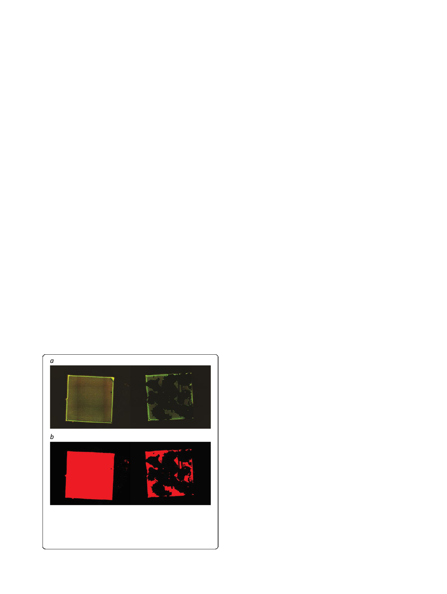

Sandbakken et al. Journal of Orthopaedic Surgery and Research (2020) 15:522
Page 4 of 9
each, followed by drying using hexamethyldisiloxane
(HMDS) (50% diluted with ethanol and 2 × 100%), for
20 min each and transferred to a desiccator to avoid
water contamination. After drying, the samples were
mounted on aluminum pin with double-sided carbon
tape and sputter coated (Leica ACE600) with 30 nm
gold/palladium. Samples were examined using a scan-
ning electron microscope (VolumeScope SEM, Thermo
Fischer Scientific) at a voltage of 7 kV.
Quantification by measurement of area covered by
biofilm
Epifluorescence pictures were processed with Fiji [21]
using a custom macro. The macro calibrates the pixel
size, mean filters (10 px radius), and automatically sets a
threshold based on LI-algorithm (LI dark) and measures
the segmented area. By this, a gradient picturizing of the
biofilm was transformed into a dichotomized picture
and thereby making the quantification of the biofilm
more reliable (Fig. 3). The area covered by biofilm before
and after sonication was expressed as mm2.
Statistics
Statistical analyses were performed using the software pack-
age IBM SPSS Statistics for Windows, Version 23.0. Armonk,
NY: IBM Corp. Biofilm-covered area is presented in box-
plots. Otherwise, data are presented as median and range.
Correlation between area covered by biofilm after son-
ication and the corresponding CFU in the sonication
fluid is presented as scatter plots. The Spearman rank
correlation is used to describe the correlation between
area covered by biofilm after sonication and the corre-
sponding CFU in the sonication fluid.
Results
Quantitative effect of sonication on biofilm removal
In the 24-h experiment, biofilm was established in a uni-
form manner covering the entire surface on all 46 plates
investigated by epifluorescence microscopy. Sonication
of the plates yielded highly variable results with respect
to the capability of dislodging biofilm from the surface
(Table 1 and Fig. 4). No formation of biofilm appeared
on 4 negative controls.
In the 72-h experiment, epifluorescence microscopy
showed that biofilm was established in a uniform man-
ner on all 12 plates. Compared to the 24-h biofilm ex-
periment, sonication resulted in less pronounced
dislodgment of biofilm (Table 1). No biofilm formation
appeared on 2 negative controls.
Visualization of biofilm bacteria after sonication
The presence of biofilm-embedded bacteria after sonic-
ation was confirmed by CLSM (Fig. 5).
Remaining coccoid bacteria in cluster-like formations
were evident on the 2 steel plates with 24-h biofilm se-
lected for SEM after sonication (Fig. 6).
Culture of rinsing and sonicate fluid
Culture of final rinsing fluid and sonicate fluid was posi-
tive in all samples (46 + 12). In the 24-h biofilm the
amount was 2 × 103 (5 × 101–5 × 104) and 9 × 104 (6 ×
104–3 × 105) CFU/mL, respectively. In the 72-h biofilm,
the amount was 1 × 104 (6 × 103–3 × 104) and 8 × 105 (1
× 105–2 × 106) CFU/mL, respectively.
The amount of bacteria in the sonication fluid and the
corresponding area covered by biofilm after sonication is
presented in the scatter plots (Figs. 7 and 8). The correl-
ation coefficient was − 0.213 and − 0.838 for the 24-h
and 72-h biofilm, respectively.
Fig. 3 The effect of sonication is seen by comparing area covered
by biofilm before and after sonication visualized by epifluorescence
(a). To be able to quantify the covered area, pictures were
dichotomized with help of a macro in the Fiji software (b). The
resulting red area represents biofilm
Discussion
In this study, we established a method to quantify the ef-
fect of sonication as a method to dislodge biofilm-
embedded S. epidermidis from a steel surface in vitro.
Our study stands out compared to existing literature by
showing biofilm changes on a large surface directly by
quantitative microscopy and adds new knowledge about
how biofilm responds to a clinically relevant sonication
protocol. The main result is the highly variable manner
by which sonication resulted in dislodgment of biofilm
as visualized by epifluorescence and SEM. After ensuring
an even effect of ultrasound inside all tubes at all posi-
tions in the bath, we believe the variability observed can
be trusted and not be attributed to technical issues. We
used a stepwise approach to quantify biofilm-covered